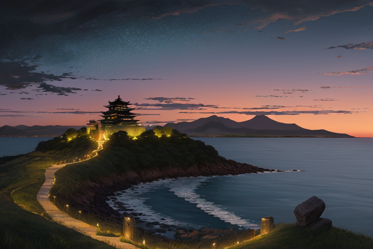
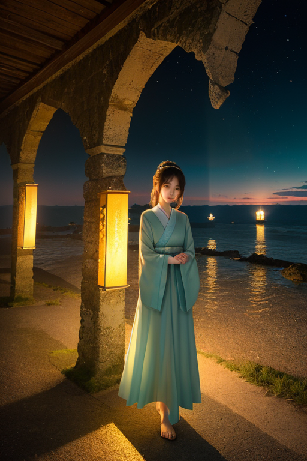
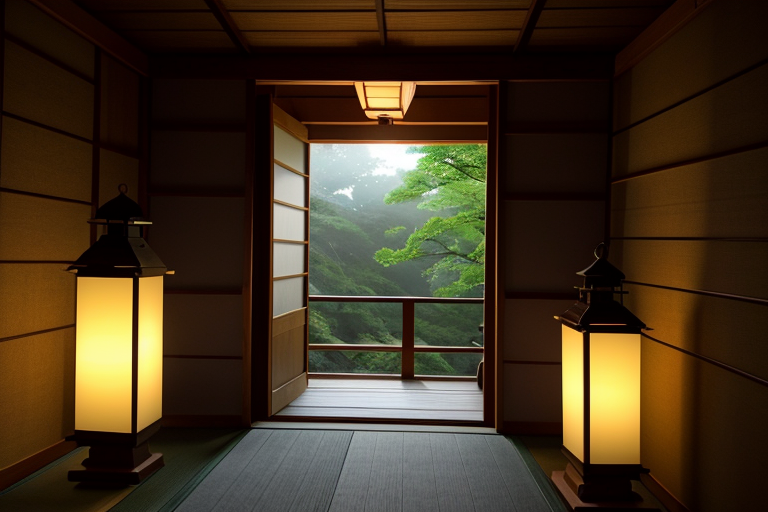
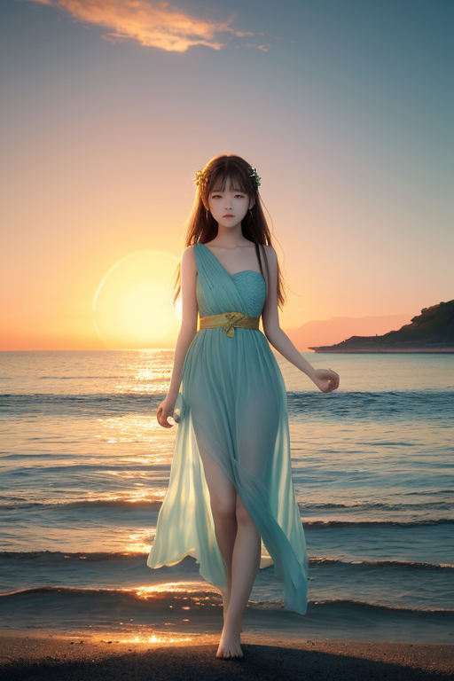
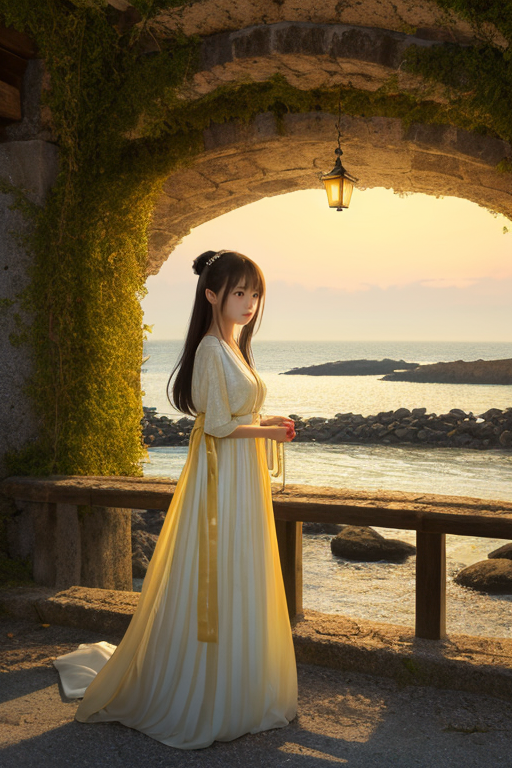

第一章 現実の宮城
あなたはまだ気づいていない。この土地にも、王がいることを。
松島の湾に、夕陽が落ちる。島々の輪郭が群青色に溶け、灯りが一つ、また一つと灯り始める。その静かな海の向こうには、かつて全てを飲み込んだ境界線が、今も確かに横たわっている。ミヤグリア・ルクスは、仙台城跡の石垣の上に立っていた。伊達政宗が眺めたかもしれないこの場所から、彼は見えない歪みを調整する。波の高さを数センチ抑え、地盤の軋みをほんの少し和らげる。それは英雄の業ではなく、ただひたすらに続ける「調整」でしかない。
彼の王国、ミヤグリア・ルクスは「灯と復興の王国」と呼ばれる。彼自身は、その名にふさわしくないと感じていた。三年前、あの巨大な歪みがこの地を襲った時、彼は津波を数十秒遅らせることしかできなかった。多くの灯りが消えた。彼はそれを、自らの力不足だと捉え続けている。
「ルクス様」
背後から、優しい声がした。主席妖精ルミエラが、小さな灯火のような姿で浮かんでいる。彼女の輝きは、城下町に灯り始めた街灯と、どこか似ていた。

第二章 歪みの兆候
仙台城跡から見下ろす街並みには、無数の光が灯り始めていた。三年前より確かに増えている。しかしルクスの目には、その光の一つひとつに、消えた灯りの影が重なって見える。彼の王国「ミヤグリア・ルクス」は、歪みの列島の中でも特に複雑な海境、陸と海の境界線を司る。ゆえに、海から来る巨大な歪みには敏感だった。
今、彼が感じているのは、あの日とは種類の異なる歪みだ。外部から、ゆっくりと、しかし確実に浸透してくるもの。復興の熱気と、訪れる人々の期待、そして時に無理解が混ざり合い、土地の記憶そのものを薄めようとする、かすかな軋み。石巻の港で、新しい防潮堤を見つめる彼の胸中には、守りきれなかった自責と、変わっていく景色への哀愁が静かに渦巻いていた。
「ルクス様、痛んでいますね」
ルミエラがそっと肩近くに寄る。彼女の灯火は温かい。
「この歪みは、目に見えない津波のようなものです。でも、流されるだけじゃありません。私たちには、灯すものがあるから」
ルクスは、手のひらに小さな群青色の光を灯した。答えは、まだ見えていない。

第三章 灯すべきもの
瑞鳳殿の静寂の中、ルクスは金色の灯籠の炎を見つめていた。伊達政宗が遺した「文武」の精神は、この地の復興の礎の一つとなった。彼は歪みを調整し、小さな崩壊を防ぎ続けてきた。しかし、2011年の巨大な歪みの前では、彼の力はあまりに微力だった。守りきれなかった命、流されてしまった景色。彼の胸に巣食う自責は、群青色の闇のように深い。
「ルクス様は、『失ったもの』ばかりを見つめすぎです」
ルミエラがそっと囁く。彼女の灯火が、灯籠の炎と重なり、柔らかく揺らぐ。
「確かに、戻らないものはあります。でも、この灯火は何を照らしていますか？」
ルクスは目を上げた。炎は、政宗の霊廟を、そして、その周囲に息づく新しい緑を、等しく照らし出していた。彼は初めて気付いた。自分が灯そうとしていたのは、過去を悼む鎮魂の灯りだけではなかったか。失ったものへの哀悼は必要だ。だが、同じ炎で、今ここにある命と、未来へ向かう意志をも、灯さねばならない。彼は、重すぎる過去の灯りを、ほんの少し、手放した。

第四章 妖精との対話
「王様が灯すべきは、『記憶』そのものではありません。」
松島の夕暮れ、島々のシルエットが海に溶ける時、ルミエラが静かに言った。
「灯すべきは、記憶を抱えて生きる『今』です。震災の海を見つめ続けることは、哀悼です。でも、その海が今、夕日を美しく反射していることも、見つめなければ。」
彼女の灯火は、波間に揺れる金色の道を照らした。
「失ったものは、確かにここにあります。でも、失うことで生まれた隙間にも、光は差し込みます。その隙間を通して、初めて見えるものがある。それが『復興』という灯りではないでしょうか。」
ルクスは黙って聞いた。彼が遅らせた数秒が、救えた命もあれば、救えなかった命もある。その重みは消えない。
「灯りは、過去を焼き尽くす炎ではありません。暗がりで手探りする人の、道しるべです。王様、あなたの灯火が照らすのは、失ったものへの道標ではなく、これから歩むべき道の、最初の一歩なのです。」

第五章 微調整と余韻
仙台城跡の石垣に、夕陽が長い影を落とす。ルクスは群青の外套を翻し、境界線の微かな歪みを手のひらで撫でていた。海から吹く風に、遠く松島の潮の香りが混じる。彼はもう、津波を数秒遅らせることしかできなかったあの日を、消そうとはしない。その代わりに、別のものを微調整していた。
震災後、この地を訪れる人々の流れ。彼らが目にする景色、耳にする話、口にするずんだ餅の甘さ。ルクスはそれらの「邂逅」の確率を、ほんの少しだけ上げる。被災地を訪ねる修学旅行生が、地元の老人と偶然、同じベンチに座るように。観光客が、復興市場で働く女性の手作りの笹かまぼこを手に取るように。それは救済ではない。ただ、記憶と未来が静かに触れ合う、ほんのわずかな余地を作る作業だ。
「灯りは、道しるべです」
ルミエラの言葉を思い出す。彼が灯せるのは、過去を照らす懐中灯ではない。これから誰かが一歩を踏み出すための、かすかな足元灯だ。喪失の闇を否定せず、その中で、それでも手を伸ばせるほどの、かすかな光。
石垣の下、七夕飾りの短冊が風に揺れる。願い事の多くは、変わらぬ日常への祈りだ。ルクスは群青の瞳を細め、そっと手を引いた。願いが書かれた短冊同士が、ふわりと触れ合うように。
あなたの町にも、王がいる。